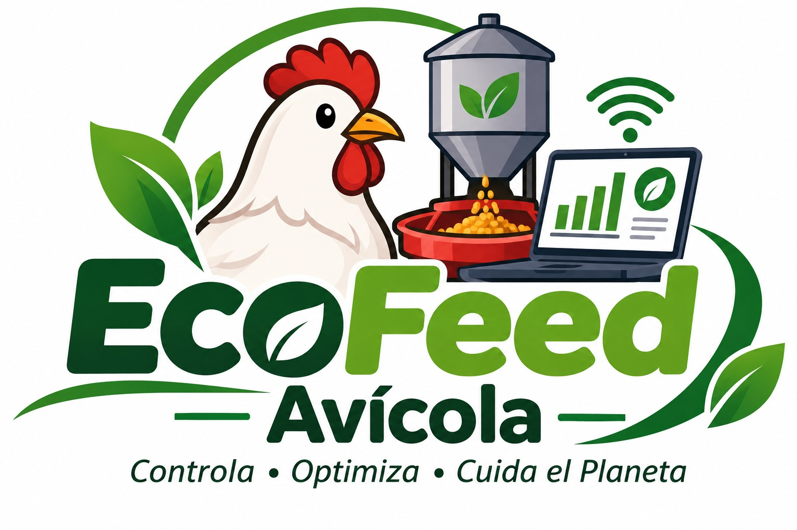

Propuesta integral de automatización, monitoreo y valorización de recursos en galpones avícolas. Controla • Optimiza • Cuida el Planeta.
Manejo deficiente de gallinaza que genera amoníaco y focos de humedad.
Pérdidas continuas por derrame mecánico y sobrellenado de comederos.
Deterioro del alimento por cambios de temperatura y exceso de humedad.
Acumulación de empaques sintéticos sin circuito claro de desecho.
El proyecto concentra su control en tres ejes principales:
Celdas de carga y ultrasonido miden peso y nivel en tiempo real.
El microcontrolador digitaliza variables y transmite datos vía local o WiFi.
Registro continuo de almacenamiento, suministro y consumo; alertas de desabastecimiento y prevención de mermas.
Entrada a bodega, suministro diario e inventario automático.
Cálculo de consumo real de las aves a partir de suministro y sobrante.
Análisis de alimento derramado fuera de comederos y alertas tempranas.
Control de empaques, cama usada, gallinaza y purina deteriorada.
Consolidado gráfico y avisos automáticos para atención oportuna.
Estiércol como abono orgánico para cultivos locales.
Programar raciones para evitar derrames y descomposición en comederos.
Vigilar humedad y niveles en silos para preservar la purina.
Recoger y clasificar lonas plásticas para empresas recicladoras.
Reducir el desperdicio de alimento y aprovechar los subproductos del galpón.
Usar mejor el insumo más costoso mediante monitoreo y dosificación precisa.
Mejores condiciones sanitarias internas y menor huella ambiental rural.
La purina contiene maíz y soya, cuya producción demanda tierra, agua, fertilizantes y energía que se pierden al desperdiciarse.
El alimento caído y acumulado se mezcla con excrementos, humedad y residuos orgánicos, deteriorando la higiene del galpón.
Restos descompuestos y nutrientes pueden llegar a suelos o fuentes de agua por escorrentía, aumentando materia orgánica y nutrientes.
Genera residuos que atraen plagas y malos olores, además de desperdiciar energía y emisiones asociadas a producir, procesar y transportar el alimento.
Registra los ingresos de bultos/kilos al galpón y las salidas diarias de suministro. El inventario se actualiza automáticamente.
| Fecha | Movimiento | Cantidad | Encargado |
|---|
Ingresa el alimento suministrado y el sobrante medido en comederos para calcular el consumo real estimado y guardar su historial.
| Fecha | Suministrado | Sobrante | Consumo est. | % Aprovech. |
|---|
Registra la purina derramada en el suelo o fuera de los comederos. El sistema analiza el porcentaje de pérdida y emite alerta si supera el umbral crítico (5%).
| Fecha | Derrame | % Pérdida | Causa | Estado |
|---|
Lleva el control de recolección de empaques plásticos, cama usada, excrementos (gallinaza) y alimento deteriorado con fecha y destino.
| Fecha | Tipo de residuo | Cantidad | Destino |
|---|
Comparación entre alimento consumido por las aves, sobrante en comedero y desperdicio derramado.
Volumen acumulado por tipo de residuo en el galpón.